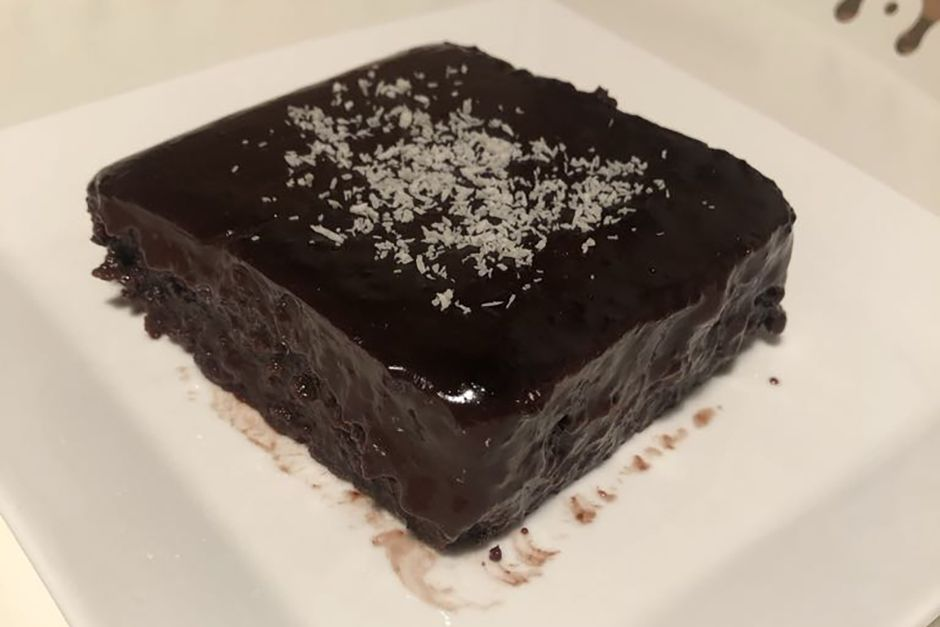

Islak Kek Tarifi
Browni tadında nefis bir ıslak kek tarifi, bir çok ıslak kek tarifinde üzerine dökülen sosta bulunan
çiğ yumurta nedeni ile tarifi denemek konusunda sıkıntı yaşayanlara göre güzel bir ıslak kek, beğeneceğinizi düşünüyorum.
Kaç Kişilik: 8-10 Kişilik
Hazırlama Süresi: 10 dk
Pişirme Süresi: 25 dk

Islak Kek Tarifi İçin Malzemeler
- 3 adet yumurta
- 1,5 su bardağı şeker
- 1,5 su bardağı süt
- 1 su bardağı sıvı yağ
- 1 paket kakao (25g)
- 1 paket kabartma tozu
- 1 paket vanilya
- 2 su bardağı un
Üst Sosunu Hazırlamak İçin Malzemeler
- 1 su bardağı kakaolu karışım (bu karışımı kek hamurunu yaparken ayıracağız
- 1,5 su bardağı süt
Islak Kek Nasıl Yapılır?
- Islak kek tarifi için ilk olarak yumurta, şeker iyice çırpıldıktan sonra süt, sıvı yağ, kakao eklenerek tekrar çırpılır.
- Kekimizi ıslatmak için bu karışımdan bir su bardağı ayrılır.
- Kalan karışıma kabartma tozu, vanilya ve elenmiş un karıştırılarak kek hamuru oluşturulur.
- Yağlanmış tepsiye ya da borcama dökülerek 170 derecede fırına sürülür, yaklaşık 35 dakika pişirilir.
- Keki beklerken üzeri için ayırdığınız karışımı uygun bir tavaya alarak üzerine süt ilave edilir ve ocakta 5 dakika kaynatılır.
- Fırından çıkan kekin ilk sıcaklığı çıktıktan sonra yani 10 dk kadar sonra dilimlenir, üzerine yavaş yavaş ılıyan sos her yerine gelecek şekilde dökülür.
- Kekin sosu güzelce çekmesi için 2-3 saat dinlendirildikten sonra ıslak kek servis edilebilir.